CodePulse
GitHub PR Analytics · Team Velocity · Code Health
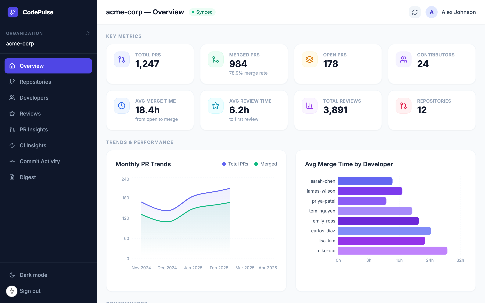
Step 1 – Sign in with GitHub OAuth
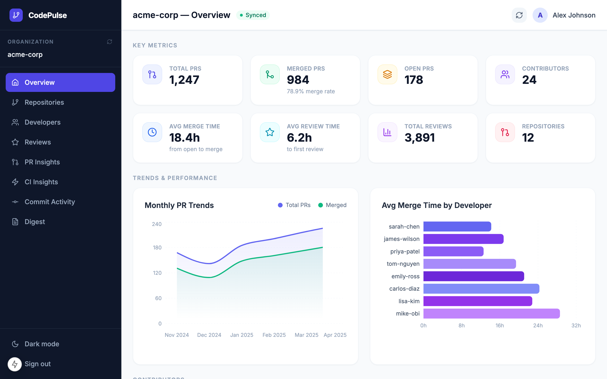
Step 2 – Dashboard overview: team metrics at a glance
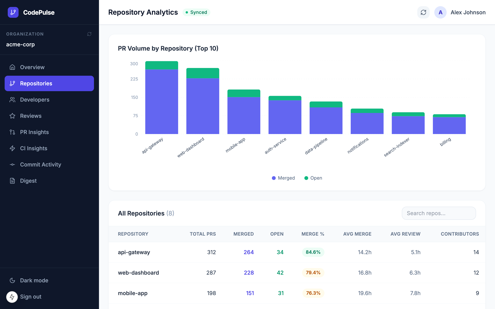
Step 3 – Repositories: PR velocity and review turnaround
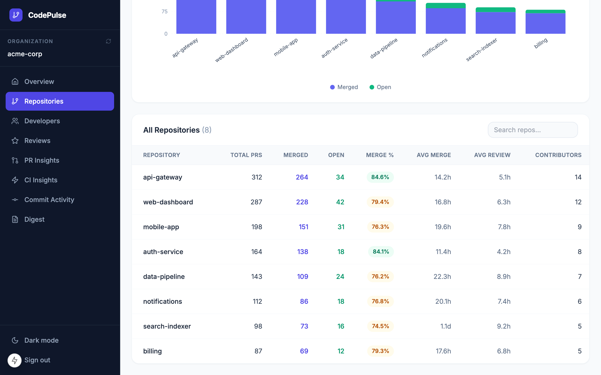
Step 3 – Sortable repository table with per-repo insights
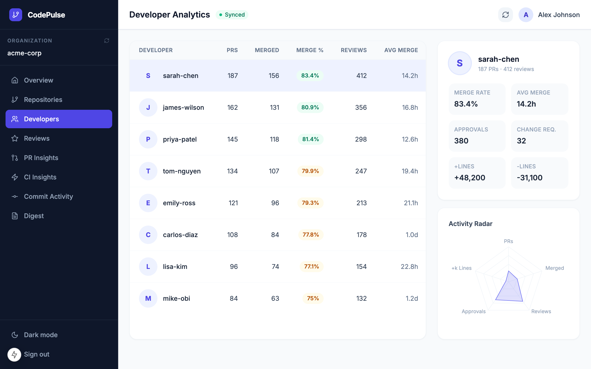
Step 4 – Developer profiles: contributions, reviews, and impact
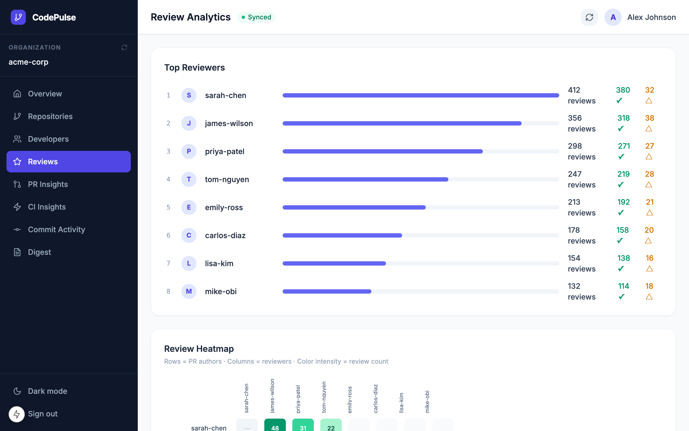
Step 5 – Code reviews: participation rate and merge time
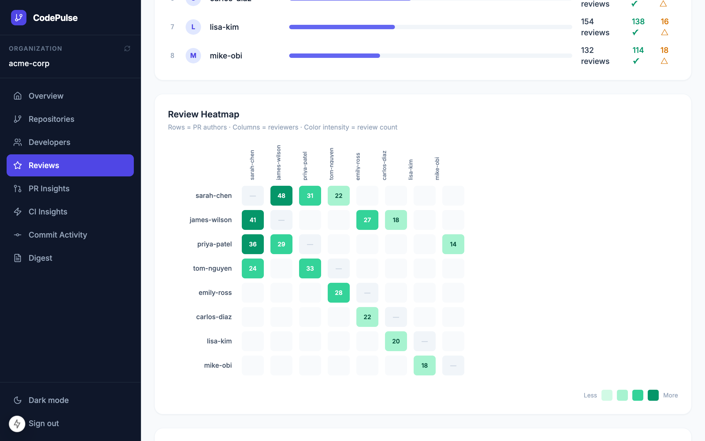
Step 5 – Review activity heatmap: when does your team review?
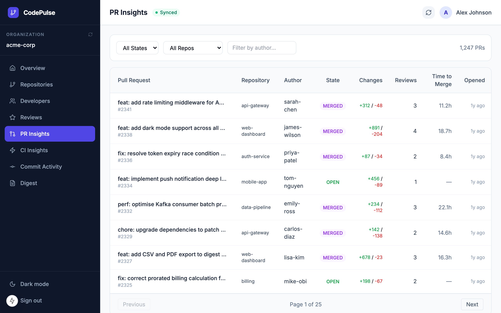
Step 6 – PR insights: filter by repo, author, and date range
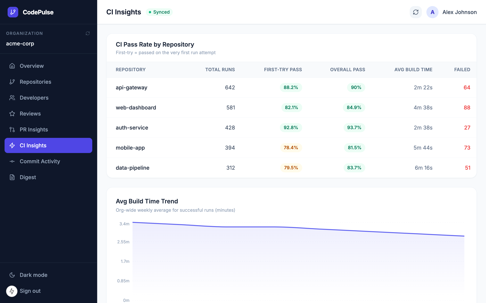
Step 7 – CI insights: build duration and flaky test detection
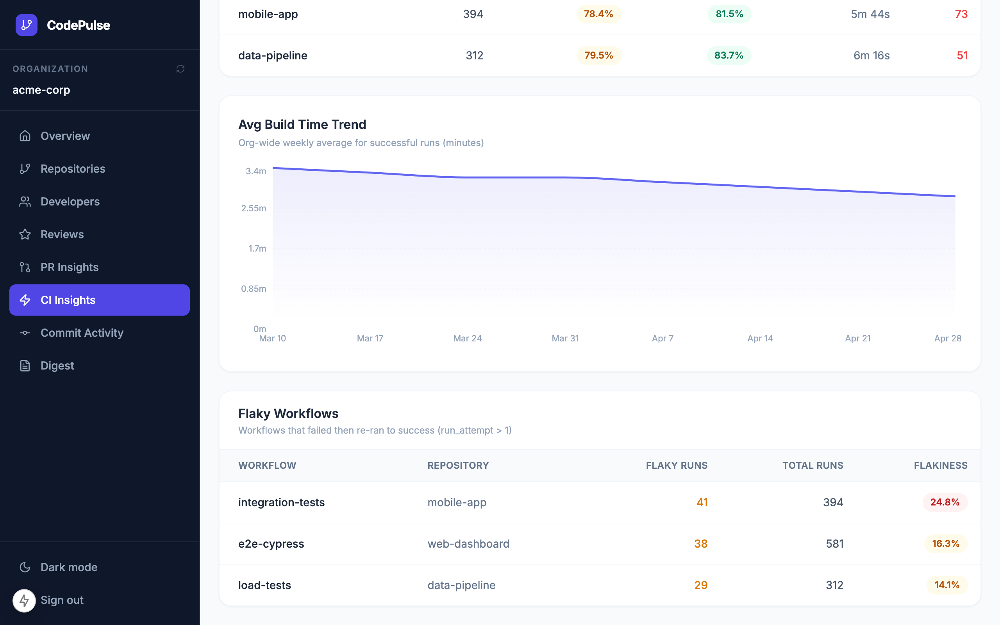
Step 7 – CI trend charts: success rate and build health over time
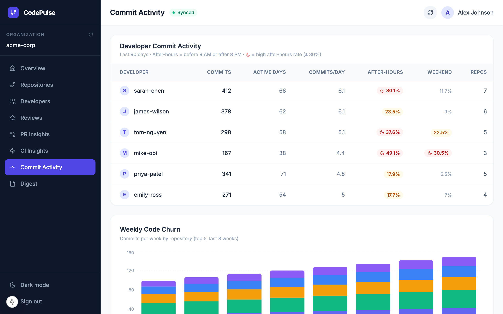
Step 8 – Commit activity: churn ratio and code velocity
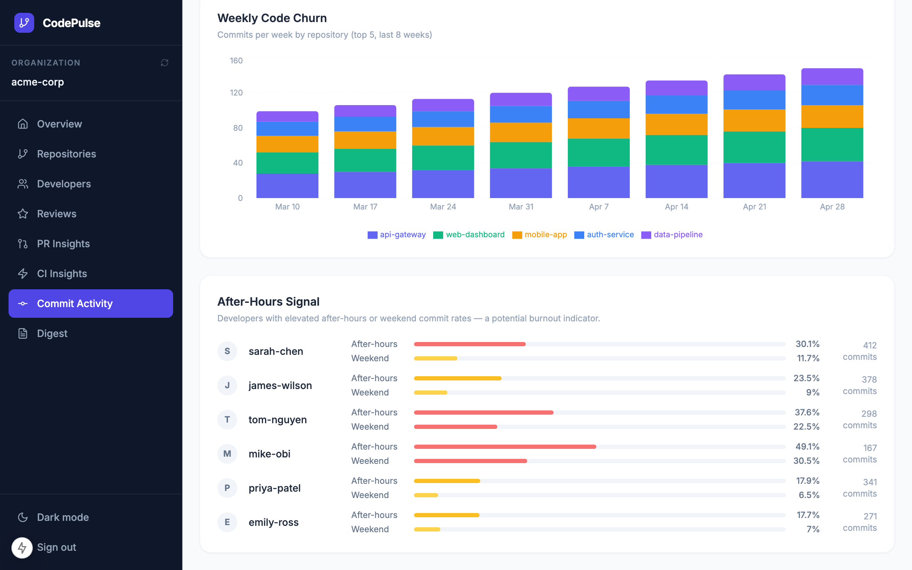
Step 8 – Burnout signals: after-hours and weekend commit patterns
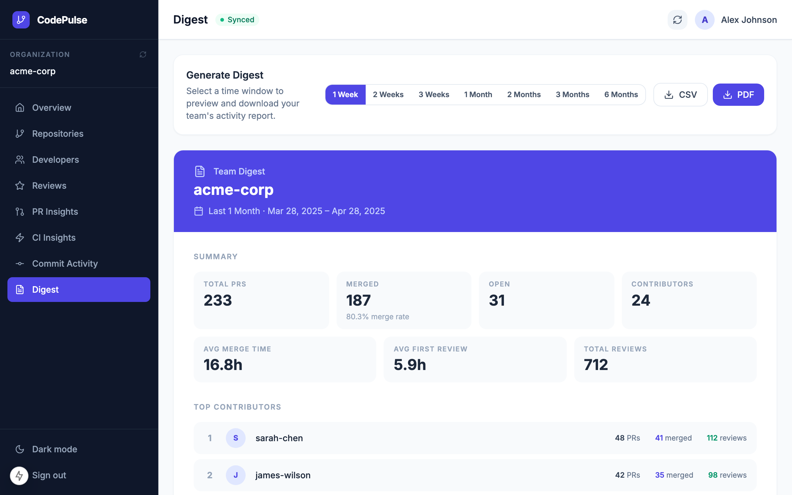
Step 9 – Weekly digest: AI-generated team summary
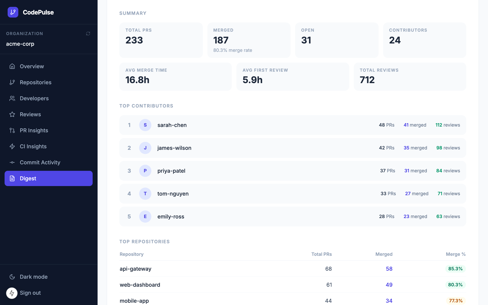
Step 9 – Preview and share your weekly team digest
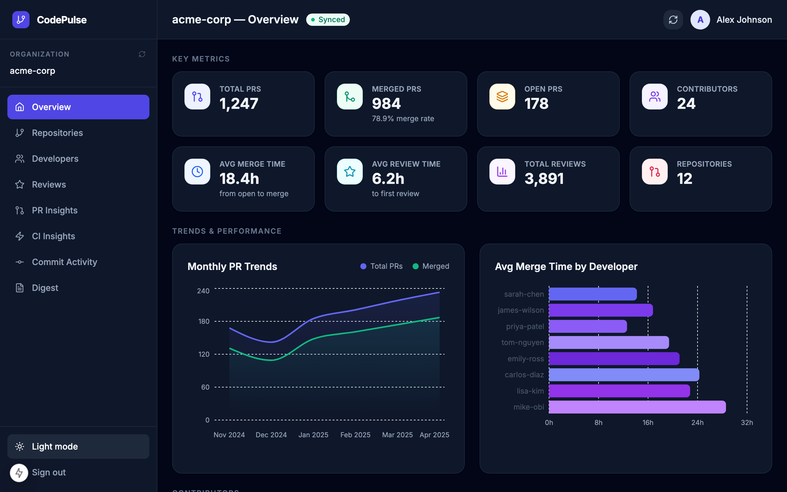
Step 10 – Dark mode: switch themes with one click